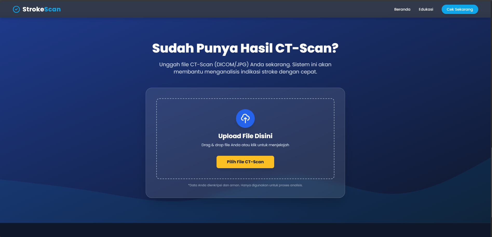
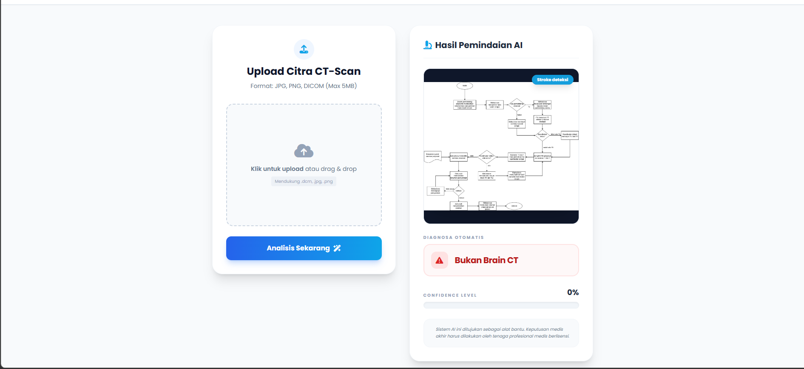

Two-Stage Stroke Classification System Berbasis Citra CT Scan

3
Kelas Stroke
YOLOv11
Detection Model
Radiomics
Feature Extraction
DL&ML
Decision Support
Situation (Latar Belakang)
Identifikasi dini penyakit stroke merupakan faktor krusial dalam dunia medis guna meminimalkan risiko mortalitas dan kecacatan permanen pasien. Namun, proses pembacaan citra CT Scan kepala secara manual memerlukan waktu, ketelitian tinggi, dan sangat bergantung pada ketersediaan dokter spesialis radiologi. Menjawab tantangan tersebut, proyek riset ini diinisiasi untuk membangun sistem kecerdasan buatan berbasis Medical Image Analysis yang mampu mendeteksi serta mengklasifikasikan kondisi Stroke Iskemik, Stroke Hemoragik, dan Normal secara otomatis, cepat, dan objektif.

Task (Tantangan Riset & Target Sistem)
Tantangan utama dalam proyek ini adalah mengatasi kompleksitas visual citra medis, di mana lesi stroke sering kali memiliki batas yang samar dan ukuran yang bervariasi. Target utama saya adalah merancang arsitektur sistem klasifikasi terintegrasi yang tidak hanya memiliki akurasi tinggi, tetapi juga *interpretable* (dapat dipahami alur keputusannya secara medis). Selain itu, sistem harus mampu mengakomodasi berbagai format input data medis mulai dari data mentah klinis (DICOM) hingga format citra standar (PNG/JPG) untuk diolah menjadi prediksi klasifikasi yang siap mendukung keputusan klinis (Decision Support System).
Action (Metodologi & Implementasi Teknis)
Untuk menyelesaikan tantangan tersebut, saya merancang dan mengimplementasikan pendekatan Two-Stage Classification System menggunakan kombinasi teknologi Deep Learning dan komputasi fitur canggih. Langkah-langkah strategis yang dilakukan meliputi:
- Stage 1 - Lokalisasi Berbasis Deep Learning (YOLOv11): Menerapkan model object detection mutakhir YOLOv11 untuk secara cerdas mendeteksi, mengisolasi, dan mengekstrak area area yang relevan atau Region of Interest (ROI) yang terindikasi mengalami lesi stroke pada citra CT Scan.
- Stage 2 - Ekstraksi Fitur Tekstur (Radiomics): Area ROI yang berhasil diisolasi kemudian diproses menggunakan pustaka PyRadiomics. Tahap ini mengekstrak ratusan fitur tekstur tingkat tinggi yang tidak kasat mata secara manual, seperti karakteristik intensitas, bentuk, dan matriks tekstur (GLCM, GLSZM).
- Klasifikasi (Machine Learning): Fitur-fitur kuantitatif tersebut kemudian diumpankan ke dalam jajaran algoritma Machine Learning yang kokoh, seperti SVM, Naive Bayes, dan Random Forest menggunakan Scikit-Learn yang mana dilatih dan dianlisis komparatif mencari algoritma terbaik untuk menentukan hasil akhir klasifikasi 3 kelas.
- Integrasi Sistem & Pembuatan API: Menyelaraskan seluruh pipeline kecerdasan buatan ke dalam lingkungan produksi menggunakan Python dan FastAPI, yang kemudian diintegrasikan dengan antarmuka web responsif berbasis Laravel agar hasil analisis visual dapat diakses secara intuitif oleh tenaga medis.

Result (Hasil Akhir & Dampak)
Penerapan arsitektur dua tahap (Two-Stage) ini berhasil mengoptimalkan kinerja sistem secara signifikan jika dibandingkan dengan model klasifikasi langsung (single-stage). Kombinasi YOLOv11 dan analisis Radiomics mampu meminimalkan false-positive dan memberikan landasan kuantitatif yang transparan bagi dokter dalam menganalisis jenis stroke. Sistem ini sukses merepresentasikan sebuah inovasi teknologi kesehatan yang mampu memotong waktu tunggu diagnosis, memberikan visualisasi area lesi secara presisi, serta berpotensi besar menjadi asisten digital andalan bagi radiolog dalam alur kerja klinis nyata.